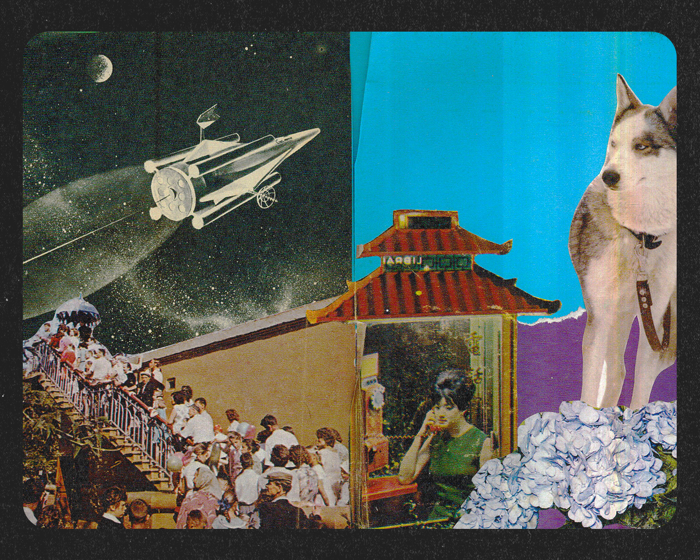

Em operações criativas de alta cadência, decisões de redistribuição costumam depender de conhecimento tácito: quem está sobrecarregado, quem consegue absorver uma nova demanda, quem conhece determinado cliente. Essas informações raramente estão visíveis nos sistemas de gestão tradicionais, aumentando a dependência da memória e da experiência de quem lidera.
O SINAL. foi concebido como um protocolo de coordenação para tornar visível a capacidade operacional de equipes criativas. Em vez de monitorar produtividade ou controlar pessoas, investiga como rituais simples de compartilhamento de capacidade podem apoiar decisões mais distribuídas.
"Dar o SINAL. é um ato coletivo."
Desenvolvi e implementei um protocolo operacional composto por rituais semanais, uma ferramenta digital, indicadores e visualizações para apoiar decisões de redistribuição de trabalho. O experimento foi aplicado durante três meses em uma operação de design com cerca de 15 designers, registrando sinalizações de capacidade e decisões reais de coordenação.
Durante o primeiro ciclo foram registradas 110 sinalizações de capacidade ao longo de 3 meses de utilização contínua, com redistribuições de trabalho apoiadas pelo protocolo — posteriormente mapeadas como uma rede de coordenação entre designers. Há também evidências qualitativas de adoção do ritual e de redução da dependência da memória individual para identificar capacidade disponível. Os aprendizados desse ciclo estão orientando novas hipóteses de pesquisa sobre coordenação, colaboração e capacidade sustentável em equipes criativas.
Conheça o SINAL.01 / 06
SINAL — peça 1